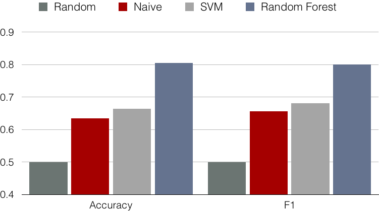

幾個月前和幾位朋友開啟了一個開源的專案 - BrakeValve，這個專案主要是為了幫助在 Steam 數位遊戲的銷售平台上面消費的使用者， 決定要不要再某個時間點購買某個遊戲。 取名的來源是 Steam 背後的母公司是 Valve ，而取名叫做煞車閥是希望能幫購買者在一頭熱想購買遊戲得時候可以煞車冷靜一下 XDD
早買早享受，晚買享折扣
這是我們出發的想法，任何人都想當一個聰明的買家。消費者不想要才剛買一個遊戲，然後過沒幾天就特價了，又或者等一個遊戲特價， 但是過了一兩個月才特價，然後玩的興致也沒了。而我自己也是常在 Steam 上購買遊戲的人， 所以我很清楚大家會喜歡這個平台 Steam 並不是因為它會銷售最新推出的遊戲，而是許多舊的遊戲會不定時打折。所以我們就是想能掌握到這些其中的規律， 並且希望可以適用於所有的遊戲（或者至少是大家想玩的遊戲）
以網路上 survey 後的結果，現在大部分對於 Steam 上面遊戲的數據的報表，都僅限於提供歷史最低價格以及現在時價等簡單的數據。如 steamspy 。 我們希望的是提供更具指標性的資訊。因此我們希望藉由取的某一遊戲的歷史資料 : 降價頻率，價降幅度的平均及標準差、遊戲性質、銷量、公司品牌等等 feature，來 predict 該遊戲近期是否會降價。
我們最後的方案是蒐集各種 Steam 遊戲，他們在過去一段時間內，每一天的價格資料，並且在加上各個遊戲的屬性 feature 作為我們的 training dataset， （詳細可以看這裡） 然後再用 prediction 來分類各個天是要買或不買。做了諸多優化之後（詳細可以看這裡） 我們達到 80% 的準確度(詳細可以看這裡），算是一個蠻理想的成效。

不過這離我們的目標還有一段距離，因為我們的 prediction 只有做在 83 個熱門遊戲上，所以近期我們會推出，Chrome 插件應用， 讓使用者可以在瀏覽 Steam 銷售的網頁就可以知道 predict 結果。並且蒐集使用者想要 predict 的遊戲， 做為我們之後擴展 dataset 的目標。
另外其實也有很多想做的優化，比如說，我們在做遊戲種類的 Feature 的時候，是做蠻白痴的 Binary vectorise ， 這樣的結果會讓這些 feature 變成一個很不 dense 的 matrix ，這樣不僅浪費空間，並且就少了種類和種類之間得關係的資訊， 所以如果可以裡把這寫名詞轉到 Word2vec 的空間上，說不定就可以提高更好的 performance。 不過這些還在規劃中，實際還是先能在 Chrome 市集上市，然後吸收使用者的回饋比較重要。
如果有興趣的話可以到我們的 Github 看看，非常歡迎各位回饋，並且喜歡的話幫我們 star 一下專案～